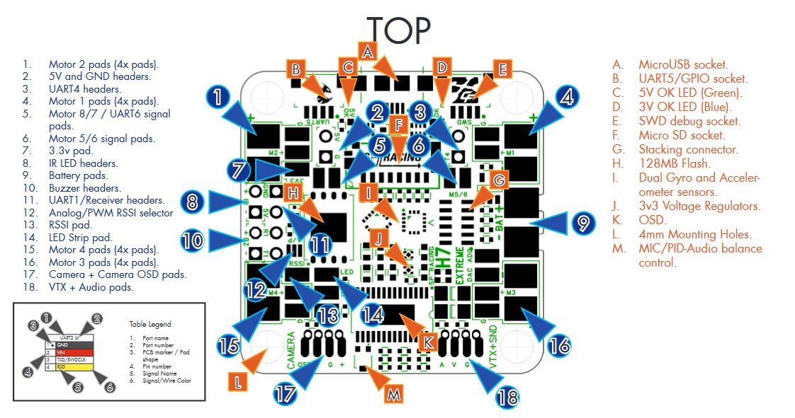

SPRacing H7 Extreme¶
The SPRacingH7 Extreme is an autopilot produced by Seriously Pro Racing .
{kind=link}

Specifications¶
Processor
STM32F750 ARM 32-bit processor running at 400 MHz
OSD: AT7456E
128MB Serial NOR flash via QuadSPI for program storage
Sensors
2x ICM20602
BMP388 barometer
Voltage sensor (2-6S)
Current Sensor (110A Continuous/ 130A Maximum)
Peripheral Connections
7 UARTs
Micro SD Card
Micro USB
I2C
Analog RSSI input
Camera and VTX
Active Buzzer
Power
2-6S DC input power
5V, 1A BEC for peripherals
Pinout¶
{kind=link}
{kind=link}
Note
be sure to configure the voltage selection pads for the camera, vtx
VTX Supply Switch¶
Set the RELAYx_PIN to “81” for on/off of VTX power pad.
Then select an RC channel for control (Chx) and set its RCx_OPTION to the appropriate Relay (1-4) that you had set its pin parameter above.
For example, use Channel 10 to control the power using Relay 2:
RELAY_PIN2 = “81” (Relay 2 is set by default, but can be changed)
RC10_OPTION = “34” (Relay2 Control)
Note
setting the above Relay on/high will turn off that supply. If nothing is assigned, default is powered on.
Default UART order¶
SERIAL0 = console = USB
SERIAL1 = Telemetry1 = USART1 (has DMA) normally RC input
SERIAL2 = Telemetry2 = USART2 (has DMA) (only TX pin available)
SERIAL3 = GPS1 = USART3 (has DMA)
SERIAL4 = GPS2 = UART4 (has DMA)
SERIAL5 = USER = UART5 (has DMA)
SERIAL6 = USER = USART6 (available instead of PWM outputs 7(TX6) and 8(RX6) if BRD_ALT_CONFIG = 1)
SERIAL8 = USER = UART8
Serial port protocols (Telem, GPS, etc.) can be adjusted to personal preferences.
RC Input¶
RC input is configured on the R1 (UART1_RX) pin. It supports all RC protocols except PPM. See Radio Control Systems for details for a specific RC system. SERIAL1_PROTOCOL is set to “23”, by default, to enable this.
SBUS/DSM/SRXL connects to the R1 pin but SBUS requires that the SERIAL1_OPTIONS be set to “3”.
FPort requires connection to T6 and SERIAL1_OPTIONS be set to “7”.
CRSF also requires a T1 connection, in addition to R1, and automatically provides telemetry. Set SERIAL1_OPTIONS to “0”.
SRXL2 requires a connection to T1 and automatically provides telemetry. Set SERIAL1_OPTIONS to “4”.
Any UART can be used for RC system connections in ArduPilot also, and is compatible with all protocols except PPM. See Radio Control Systems for details.
OSD Support¶
The SPracing H7 Extreme onboard OSD is used by setting OSD_TYPE 1 (MAX7456 driver).
SmartPort Telemetry¶
SmartPort (Sport) telemetry setup by default to be connected directly to UART2 TX pin with no external inverters required.
Dshot capability¶
All motor/servo outputs are DShot and PWM capable. Motor outputs 1-4 are bi-directional DShot capable. However, mixing DShot and normal PWM operation for outputs is restricted into groups, ie. enabling DShot for an output in a group requires that ALL outputs in that group be configured and used as DShot, rather than PWM outputs. The output groups that must be the same (PWM rate or DShot, when configured as a normal servo/motor output) are: 1-4, 5/6, 7/8, 9/10.
Battery Monitor Settings¶
These should already be set by default. However, if lost or changed:
Enable Battery monitor with these parameter settings :
Then reboot.
BATT_VOLT_MULT 10.9
BATT_AMP_PERVLT 28.5
RSSI Input¶
Analog or PWM RSSI Input can be attached to the RSSI pin. Set RSSI_ANA_PIN = 0. adjust other RSSI parameters as needed, see Received Signal Strength Indication (RSSI).
NeoPixel LED¶
The LED output is setup for use with NeoPixel LEDs by default.
Firmware¶
Firmware for these boards can be found here in sub-folders labeled “SPracingH7”.
Loading Firmware¶
Since this board stores the flight control software on external flash the initial firmware load should be done using the SPRacing SSBL . Please follow the instructions for loading PX4 firmware to load ArduPilot.
A convenient script is also available to perform the required steps.
It should also be possible to load the ArduPilot firmware and bootloader via DFU <common-loading-firmware-onto-chibios-only-boards>`__ , but doing so will invalidate your warranty. [copywiki destination=”plane,copter,rover,blimp”]